Infrastructure Operations As traditional customers transition towards cloud-based infrastructures, the need for an efficient tool to manage and monitor deployments across on-premises and cloud data centers grows exponentially. This shift has elevated infrastructure operations to a critical role within vSphere+.
Dec 2019 ~ May 2022Early access in 2020
Initial access in 2021
General Access in 2022
Design Lead
Interaction Design
User Research
Cross-functional teams alignment
Other 2 Designers from vSAN & vROps
Product Manager
UI and Backend Engineers
Content Writer
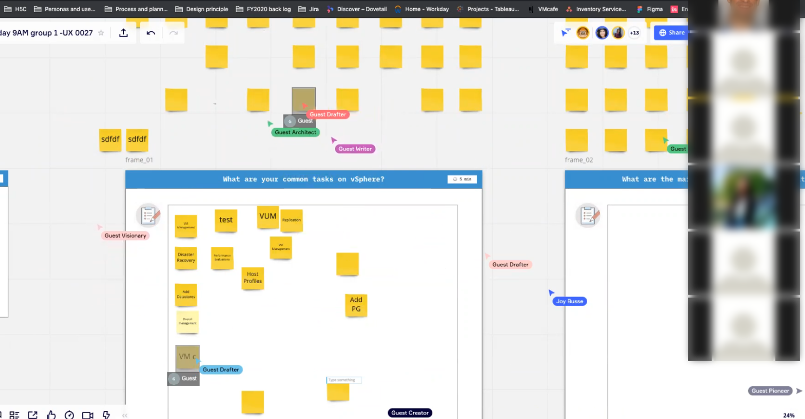
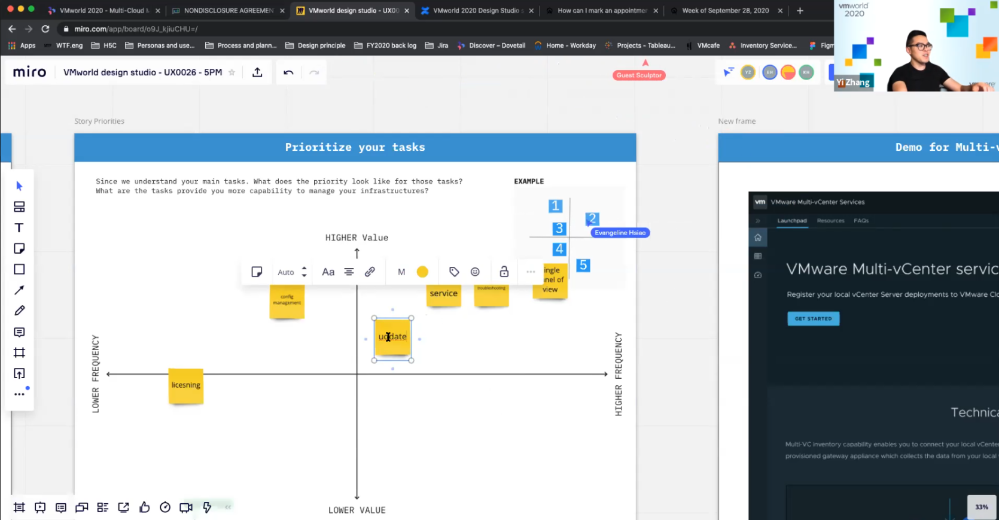
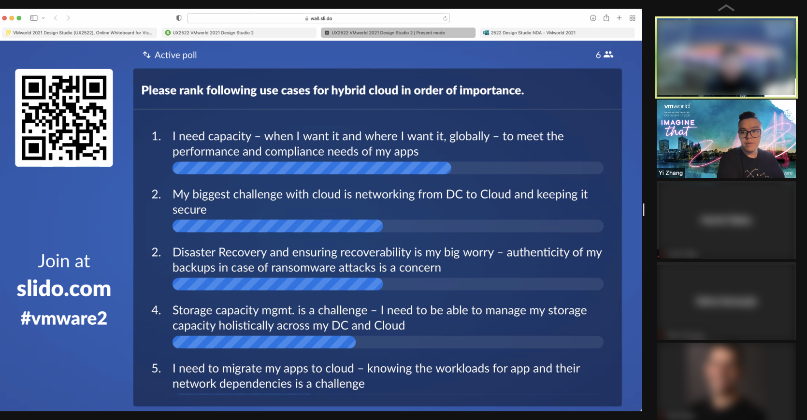
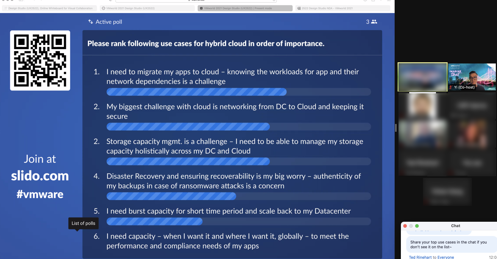


Events for Troubleshooting
There are two main sections for events. The overview helps users understand the overall health of the data centers and events list provides details for users to start to troubleshoot.
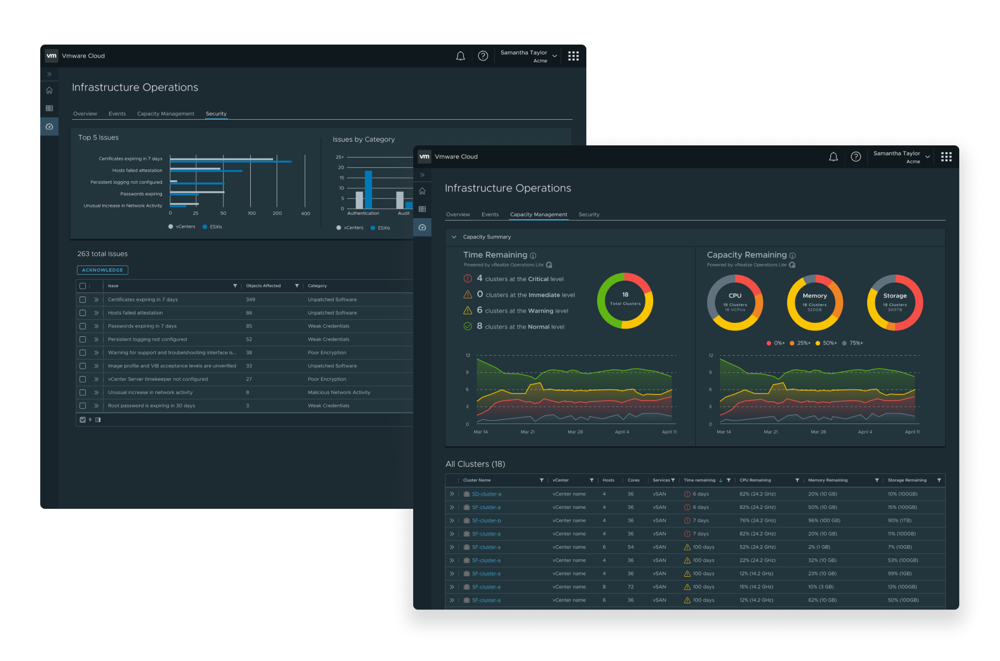
Capacity Management and Security
I mentored the other two designers for the capacity management and security to make sure the design is concistent across the operations.

Broken Overview Dashboard
We encountered a challenge that users don't see any co-relation across the data. And this is an opportunity to advocate a consistent and effective experience.
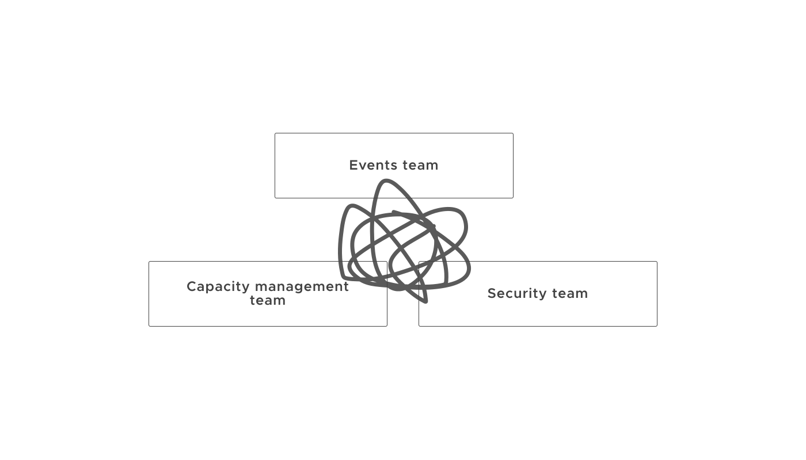


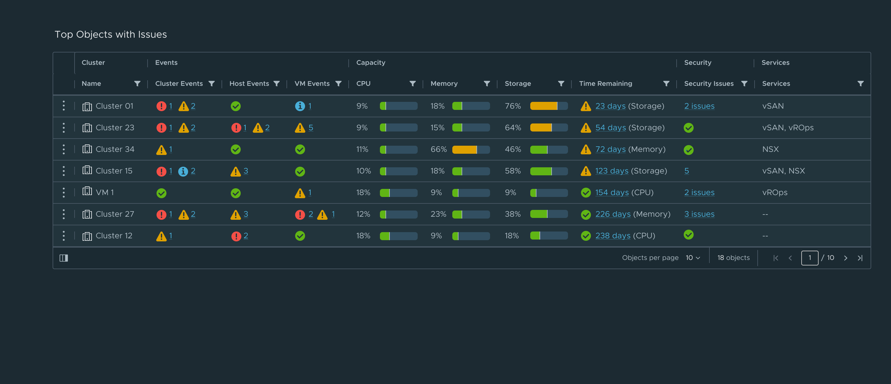
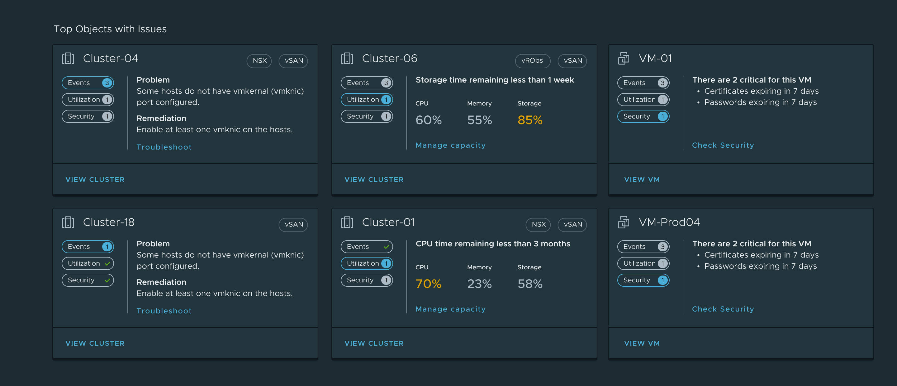

Final Design
With a deeper understanding of what didn't work in the old overview, the new design caters to users' needs and facilitates efficient operations for their infrastructures.
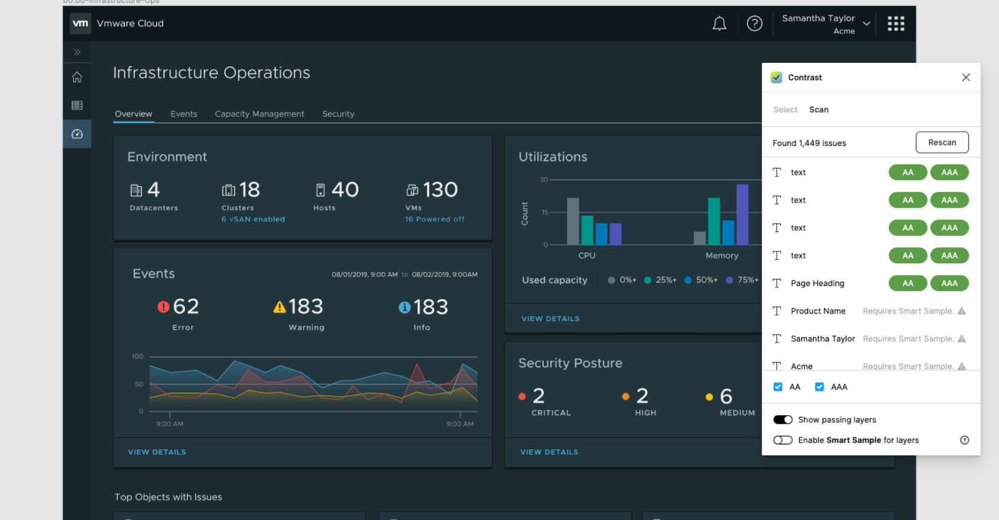
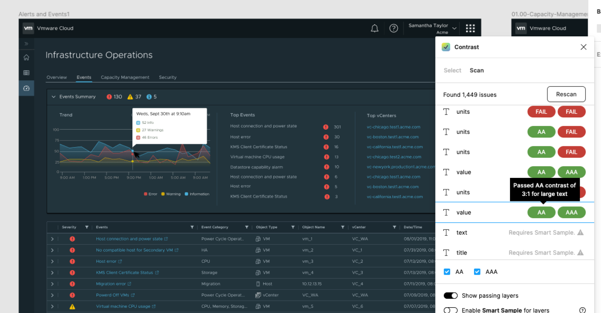
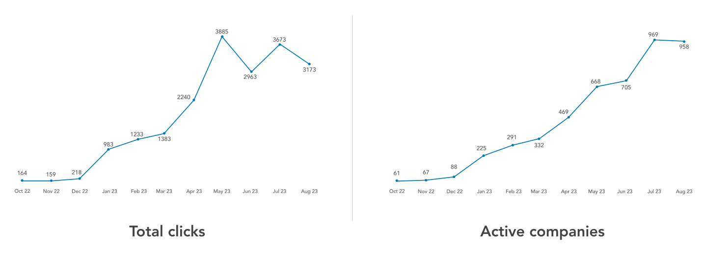
2. Satisfaction: In addition to understand the feature is well adopted and used by the customers. But it doesn't mean the UX is good. By using UserZoom, it is easy to know if the design meets users' needs and if the design is easy to use.
2. Proactive Communication: In order to get alignment, it requires tons of communications to shape and clarify a vague goal. Never worry over communication, communication helps team succeed;
3. Embrace uncertainty: There is always something that I don't know. Ask and learn is a better approach than complaining or doing nothing.